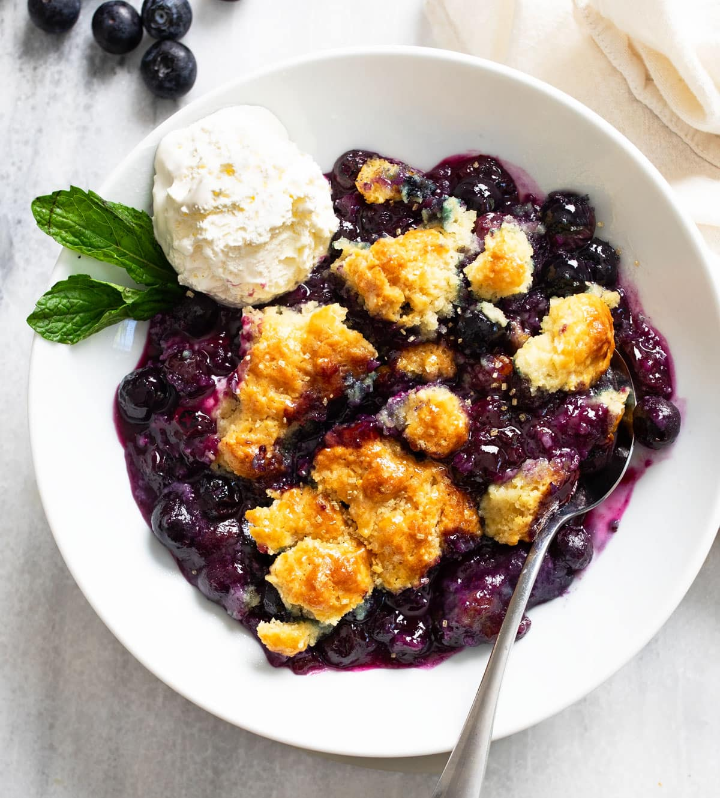

Recipe - Blueberry Cobbler

Description
This Blueberry Cobbler recipe is easy to make with fresh or frozen blueberries! The sweet and juicy filling has a golden, buttery biscuit topping that’s loaded with homemade flavor!
Ingredients
- Filling
- ½ cup sugar
- 2 tablespoons cornstarch
- 8 cups blueberries, or about 4 pints
- 2 teaspoons lemon juice
- ½ teaspoon vanilla extract
- Biscuit Layer
- 2 cups all-purpose flour, or 250 grams
- ½ cup granulated sugar
- 1 ½ teaspoons baking powder
- ½ teaspoon baking soda
- ½ teaspoon salt
- 1/2 cup (or 1 stick) very cold unsalted butter, see notes
- ½ cup sour cream
- ¼ cup milk, any kind
- 2 tablespoons honey
- Biscuit Topping
- 1 egg, beaten
- 1 tablespoon milk
- 1 tablespoon coarse sugar, see notes
Steps
- Prep Work
- Preheat oven to 350° F.
- For the biscuit layer: Use a frozen stick of butter for this recipe if possible. Otherwise, place a stick of butter in the freezer until ready to use. Combine sour cream, milk, and honey in a small bowl and refrigerate until ready to use.
- Make the Filling
- Add the sugar and cornstarch to a large bowl and mix until well-combined. Add the blueberries, lemon juice, and vanilla extract and stir to combine. Transfer to a lightly greased 9 x 13-inch baking dish.
- Make the Topping
- Combine the flour, sugar, baking powder, baking soda, and salt in a large bowl.
- Cut the cold butter into small cubes (or if frozen, shred it with a cheese grater) and add it to the bowl with the dry ingredients. If it's cubed, use a pastry cutter or the back of a fork to work it until coarse crumbs form. If shredded, simply mix to combine with the dry ingredients.
- Add the chilled sour cream/milk/honey mixture. Use a silicone spatula to gently stir until just combined. Don’t overmix. It should be crumbly.
- Take small handfuls of the biscuit dough and arrange it over the cobbler, covering up most of the filling. (It’s best for this to look rustic and not perfect!)
- Whisk together the egg and the milk and use a pastry brush to brush a light layer over the top. Sprinkle with sugar.
- Bake and Serve
- Bake uncovered for 45-55 minutes, until the top is golden, the filling is hot and bubbly, and a toothpick comes out clean when inserted into the biscuit topping.
- Let cool for 5 minutes and serve with a side of vanilla ice cream!
Back to home